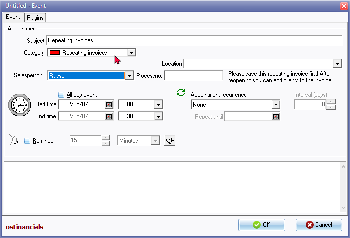
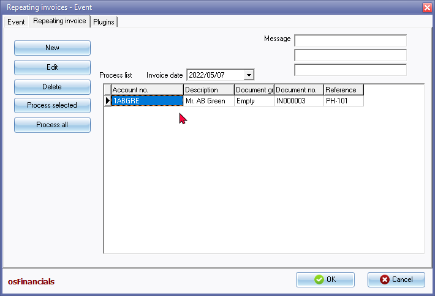
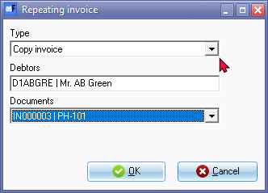

Repeating invoices - Calendar
The "Repeating invoices" appointment category in the Calendar feature of osFinancials provides a convenient way to schedule and generate recurring invoices for your debtors (customers/clients). This feature is especially useful for invoices that occur frequently or on a regular basis, such as monthly service fees or subscription payments.
With the "Repeating invoices" category, you have the flexibility to select invoices for selected debtors or debtors linked to a selected group that need to be generated repeatedly. These can be invoices for specific services or products that are billed to multiple debtors or a single debtor.
Once you have selected the invoices to be generated, osFinancials5 will automatically generate invoice numbers and copy the document details into the normal invoice document for the selected debtor or debtors. This eliminates the need for manual entry of invoice information, saving you time and reducing the chances of errors.
To review and make any necessary edits to the generated invoices, you can access the Invoices section of osFinancials. Here, you can check the details, adjust any amounts or descriptions if needed, and ensure the accuracy of the invoices before they are sent to the debtors.
After reviewing and editing the invoices, the next step is to update (post) them to the ledger. This final step ensures that the generated invoices are properly recorded in the accounting system and reflected in the relevant debtor accounts.
By utilizing the "Repeating invoices" category in the Calendar, you can streamline the invoicing process for recurring transactions. It eliminates the need to manually enter the same invoices each month and reduces the risk of overlooking or forgetting to bill for recurring services. This feature in osFinancials5 saves you time and effort by automating the generation of repeating invoices, allowing you to focus on other aspects of your business.
Schedule Repeating invoice events
To schedule a Repeating Invoice Event:
- On the Default ribbon, select Calendar. The Planner (Display - Agenda - the default screen) will be displayed.
- Select a suitable time and right-click on the Day View. On the context menu, select the Add Event option. The Untitled - Event screen is displayed:
 - Enter and select the following:
- Subject - Enter the subject for the repeating invoices event. This subject needs to be a sensible one to allow you to easily identify and manage the scheduled event on the Calendar.
- Category - Select the category as Repeating invoices. This will be indicated with red in the Calendar. (Other options are Appointments, Debtors Appointments or Creditors Appointments).
- Start time ... End time - The selected time when the Add Event option was launched, will be displayed. You may set or adjust the Start time, if necessary.
|
|
You may need to:
|

- Recurrence - This is the frequency and times you may schedule the repeating invoices. For example, if you need to process the Invoices on a monthly basis, you may select the "Monthly by day" or the "Monthly by date" options.
|
|
Select the appointment recurrence (i.e. "None" (default), "Daily, Weekly, Monthly by day, Monthly by date, Yearly by day, Yearly by date" or "Custom"). If "Custom" is selected, you may set the interval in the number of days. |
|
|
Interval (days) - If "Custom" is selected you may set the interval in the number of days, for example, 30 days if you need to process the repeating invoices every 30 days. |
|
|
Repeat until - If the Recurrence is set to any other value than "None", the "Repeat until date" will be displayed for one calendar year, e.g. 07/05/2022 if the end date is 07/05/2023. |
- Reminder - Select this option, if you need to be reminded of the event or appointment. This will remind you of a scheduled event or task well in advance (from any number of minutes, hours and even days). This will also remind you until the Event or appointment is deleted.
- Notes / Information - Enter any notes or additional information about the appointment. This will also be displayed when you edit the event, or when the "Reminder" is displayed.
- Click on the OK button.
Copy scheduled Repeating invoice
To copy scheduled Repeating invoices:
- You may also open the event - Repeating invoices using the following two options:
- Click on the Open item button of the Reminder screen to edit the event - Repeating invoices.
- Right-click on the event - "Repeating invoices" on the Calendar. Select the Add event option. This will launch the Repeating invoices - Event screen.
- On the Event tab you may edit any of the fields you need to edit. You may also add any additional information or edit any notes or information already added when the event or appointment was created or previously edited.
- Click on the Repeating invoice tab. The following Process list screen is displayed:

- The first time the Process list screen is displayed, no Invoices will be listed. Click on the New button to copy or set the Invoices as recurring invoices. The following screen is displayed:
 - Enter and select the following:
- Type - Select one of the following:
- Copy Invoice (default option) - to copy a selected Debtor account.
- Copy Invoice to group 1 - this will copy a selected document (Invoice or Quote) to all Debtor accounts linked to a specific debtor group 1.
|
|
This option is only available if you have created Debtor groups 1 in Setup → Groups (Debtors). |
- Debtor - Select one of the following:
- If the Copy Invoice has been selected, select the Debtor account for which you need to set or copy a selected Invoice as a Repeating Invoice.
- If the Copy Invoice to group 1 has been selected, you need to select an available debtor group from the drop-down list.
- Documents - Select a specific document (Invoice or Quote) from the drop-down list. This Invoice will be set or copied to a selected Debtor account, or to all Debtor accounts within the selected Debtor group 1.
- Select the date on which these repeating invoices are to be processed / generated, if necessary.
- Enter a message which you would like to be displayed on the repeating Invoice, or all repeating invoices for the selected Debtor group 1.
- Click on the OK button. All Repeating invoices will be listed on the Process list.
Edit scheduled Repeating invoices
Once a document (Invoice or Quote) has been copied or added to the Process list, you may edit the Process List, if necessary. The process list will display a list of the copied documents. The following information for each document will be displayed on each row:
- Account number - Account number or account code of the Debtor account.
- Description - Account description or name of the Debtor account.
- Debtor group 1 - The debtor group 1 if the selected Debtor account have been linked to a Debtor group 1 and the Copy Invoice to group 1 option was selected will be displayed.
- Document number - The selected document number from which the repeating Invoice will be copied to create / generate a new Invoice.
- Reference - The reference, if entered on the Document entry screen for the document.
The following options are available:
- Edit button - click to edit the selected Repeating Invoice's selection (Type, Debtor / Debtor group 1 or Documents).
- Delete button - click to remove the selected Repeating invoice from the Process list.
Process scheduled Repeating invoices
Once a document (Invoice or Quote) has been copied or added to the Process list, you may process or create the Repeating documents. Before you do this, you need to check that the date is correct and enter or edit the message, if necessary.
To Process Scheduled Repeating invoices:
When you are ready you may click on one of the following buttons:
- Process selected - click to process or create a document for selected Debtor accounts, or all Debtor accounts linked to the selected debtor group 1, from the selected document on the process list.
- Process All - click to process or create documents for selected Debtor accounts or all Debtor accounts linked to the selected debtor group 1 from the selected document on the process list. Once the process is finished, a confirmation message will be displayed.
“Document(s) created!”
- Click on the OK button to close or exit the Repeating invoices - Process list screen, or Repeating invoices - Event screen.
Edit / Process copied / created invoices
When the Invoices are created with this feature, osFinancials5 will automatically generate document numbers for each Invoice. The created / generated Invoices will be listed on the Document list screen for Invoices.
To do this, go to Invoices. You need to select the Debtor account and the Invoice number to check, edit (if necessary) and print the Invoices.
Finally you need to update (post) the Invoices to the ledger. This will update the transactions to the general ledger, debtors ledger, and the stock ledger. You may select the Invoice and edit the Invoices before posting or updating it to the ledger.
|
|
Should you by accident have generated a Repeating invoice incorrectly to a Debtor account, you need to delete the Invoice. |